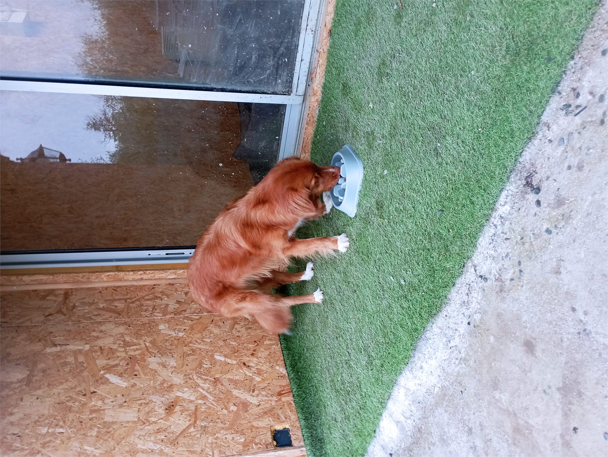
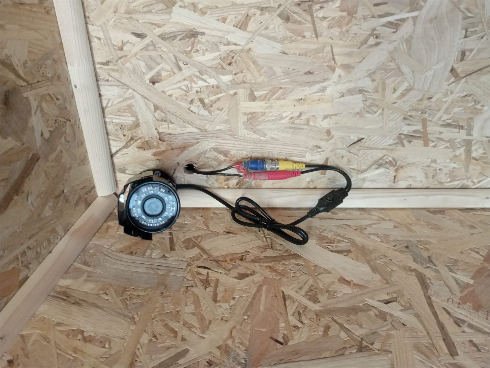
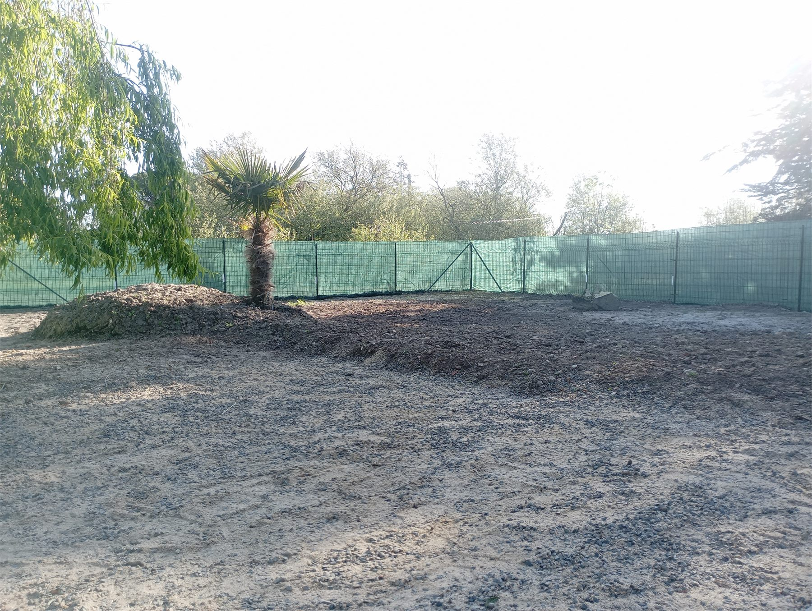
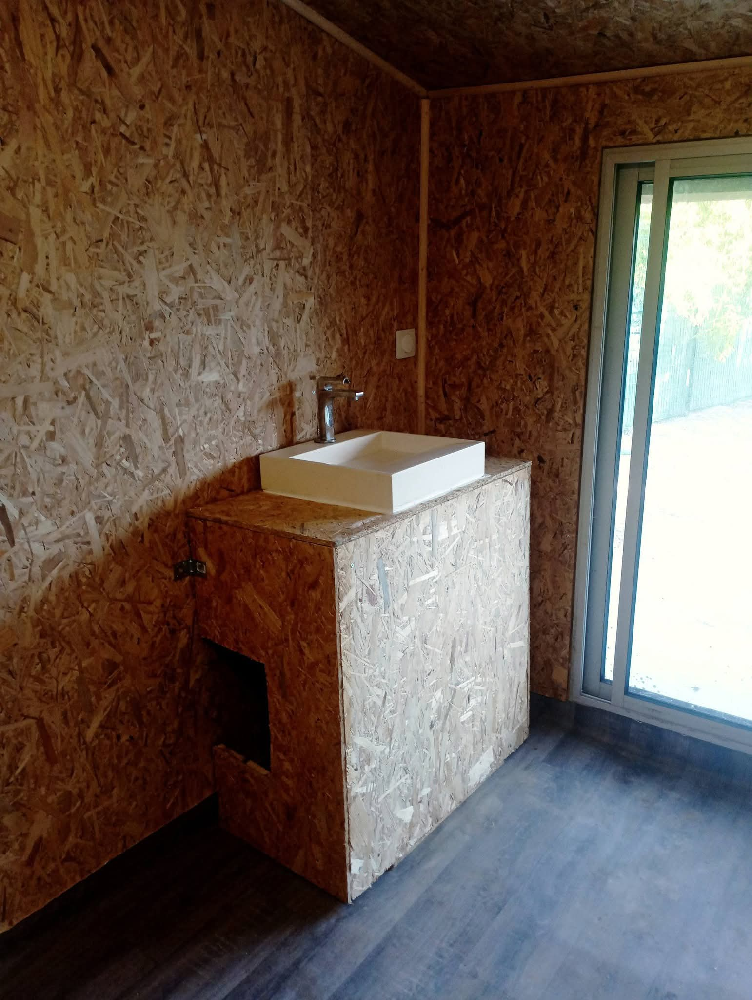
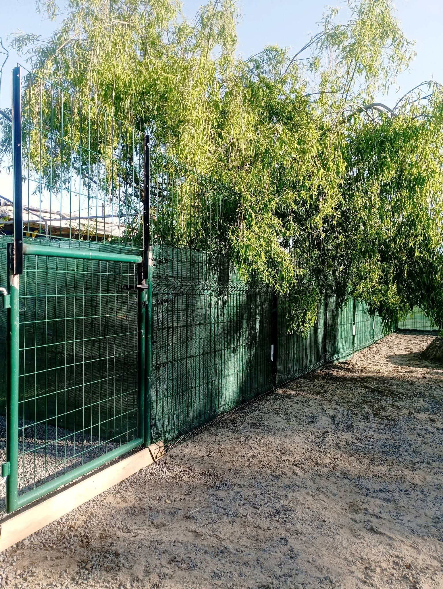

Un espace pensé pour le bien-être des chiens, notamment lors des périodes chaudes.
Garde de chien près de Pornic, en petit effectif
La pension canine des Poulettes du Marais accueille les chiens en petit nombre afin de garder un suivi simple, attentif et humain. Elle se situe à Bourneuf-en-Retz, dans le Pays de Retz, à proximité de Pornic, Villeneuve-en-Retz, Sainte-Pazanne, Machecoul-Saint-Même, La Bernerie-en-Retz, Les Moutiers-en-Retz et Chaumes-en-Retz. Chaque demande de séjour permet de renseigner les informations importantes du chien : alimentation, comportement, vétérinaire habituel, vaccins, traitement éventuel, assurance et consignes particulières.
Pension canine Pornic et garde de chien en Pays de Retz
Vous cherchez une pension canine Pornic, une pension chien Pornic, une garde de chien Pornic ou une garde de chien dans le Pays de Retz ? Les Poulettes du Marais se trouvent à Bourneuf-en-Retz, près de Pornic, Villeneuve-en-Retz, Sainte-Pazanne, Machecoul-Saint-Même, La Bernerie-en-Retz, Les Moutiers-en-Retz et Chaumes-en-Retz. L'accueil en petit effectif permet un suivi plus personnalisé pour chaque chien, loin d'un fonctionnement impersonnel.
Le calendrier permet de voir les disponibilités et d'envoyer une demande de séjour en ligne.
La fiche chien conserve les informations utiles pour préparer chaque séjour sereinement.
Une garde de chien pensée pour rassurer les propriétaires
Avant le séjour, vous pouvez transmettre les habitudes de votre chien, ses besoins alimentaires, son vétérinaire habituel, ses informations de santé, son numéro de puce et les consignes importantes. Le contrat de pension est disponible en ligne afin de garder un suivi clair entre la pension et la famille.
Photos de la pension canine





Une pension canine proche de Pornic et du Pays de Retz
Les Poulettes du Marais se situent au 61 Les Ruelles, 44580 Bourneuf-en-Retz, en Loire-Atlantique, à proximité de Pornic, Sainte-Pazanne, Machecoul-Saint-Même, Villeneuve-en-Retz, du Pays de Retz et de la Vendée. Cette page aide les personnes qui recherchent une pension pour chien, une garde de chien, une pension canine familiale ou un hébergement canin autour de Pornic et dans le secteur du Pays de Retz.
Vous recherchez précisément une garde de chien autour de Pornic ? Consultez la page dédiée à la garde de chien près de Pornic.
Questions fréquentes
Cliquez sur “Réserver un séjour”, créez ou ouvrez votre compte, puis remplissez les dates et la fiche chien.
Oui, la pension est climatisée pour aider au confort des chiens, surtout pendant les fortes chaleurs.
Préparez les vaccins, le numéro de puce, l'assurance, le vétérinaire habituel, l'alimentation et les consignes.
L'accueil est volontairement limité afin de garder un suivi plus simple et plus confortable.
Réserver ou poser une question
Vous pouvez envoyer une demande de réservation directement depuis l'application, ou contacter Les Poulettes du Marais pour une question sur le séjour de votre chien.